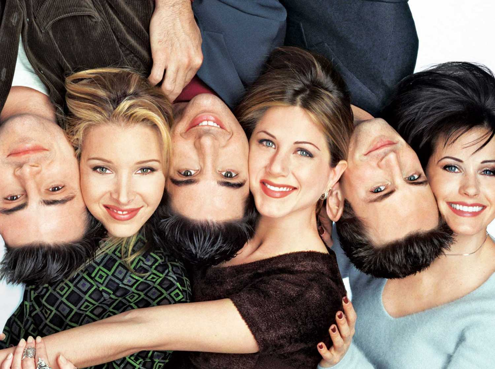

Seis amigos, três homens e três mulheres, enfrentam a vida e os amores em Nova York e adoram passar o tempo livre na cafeteria Central Perk.
A série tem 236 episódios reunidos em 10 temporadas
Começou a ser gravado em 1994 e terminou em 2004
Com as histórias de Joey, Rachel, Monica, Phoebe, Chandler e Ross, a Warner faturou mais de 1 bilhão de dólares
Central Perk era para ser chamado de Insomnia Café
Lisa Kudrow odiava tocar violão
Todas as gravidez na série foram 'incomuns'
Lisa Kudrow morria de medo do pato que morava com Joey
Bruce Willis participou da série sem cachê
Todos os episódios tem o nome com "Aquele com..."
Dr. Ross Eustace Geller, o irmão mais velho de Monica, era apaixonado pela amiga desta, Rachel, e na faculdade frequentou o curso de paleontologia onde conheceu Chandler. Casou-se com a namorada de faculdade, Carol, mas separou-se (com ela grávida) ao descobrir que ela era lésbica. Deste casamento nasceu Ben Geller, seu primeiro filho, e teve que dividir seu papel de pai com Susan Bunch, que era a amante lésbica da sua mulher.
Monica Geller, uma mulher que possuia uma personalidade incrível e que nada tem a ver com sua mania de limpeza, organização e sua necessidade de sempre estar certa. Monica, acima de tudo, queria ser feliz e fez um pacto consigo mesma de que não aceitaria nada menos para sua vida, do que a felicidade.
Filha do Dr. Leonard Green, um cirurgião cardiologo severo e intimidante, e sua mãe Sandra Green,comicamente esnobe e inepta, Rachel Green é a segunda de três filhas. Sua irmã mais velha é Amy e sua irmã mais nova de Jill. Na escola, Rachel era extremamente popular. Ela foi rainha do baile, e presidente da classe,sua melhor amiga era Monica, em quem ela confidenciou a maioria de seus segredos, seus modos mimados foram motivos para pessoas que ela não se importava muito sobre.
Phoebe (e sua irmã gêmea, Ursula), são filhas de um “trisal” formado por duas mulheres – Phoebe Abbott e Lily Buffay – e um homem – Frank Buffay. Como Phoebe Abbott não se sentia pronta para ser mãe, Lily e Frank assumiram a paternidade das gêmeas. Morou nas ruas e sofreu muito por vários anos da sua vida.
A maneira simples com que o Joey enxerga o mundo muitas vezes pode ser confundida com estupidez. Contudo, com certa frequência ele nos surpreende com pérolas de sabedoria vindas diretamente do coração. Por conta isso, Tribbiani se encaixa no arquétipo do Tolo Sábio. Na literatura, o bobo muitas vezes profere palavras de sabedoria disfarçadas de tolices e bobagens. No show, o ator demonstra regularmente um sexto sentido para as verdades profundas relacionadas aos sentimentos dos amigos. Dessa forma, ele sabe instintivamente como agir para animar os companheiros, seja com gestos carinhosos ou falando o que precisam escutar.
Foi um processador de dados (emprego esse desconhecido pelos seus amigos) e odiava esse trabalho até que, na 9ª temporada, ele finalmente teve coragem de se demitir para trabalhar com publicidade (trabalho de que ele gostava de verdade). Ele é o mais cômico dos personagens, e conhecido por seu humor sarcástico.[5] É questionado sobre sua sexualidade e tem um pai travesti, o que aumenta ainda mais os rumores sobre sua sexualidade. Sua mãe é uma famosa escritora de romances adultos. Seu relacionamento mais longo, antes do casamento com Monica Geller, foi com a irritante Janice.